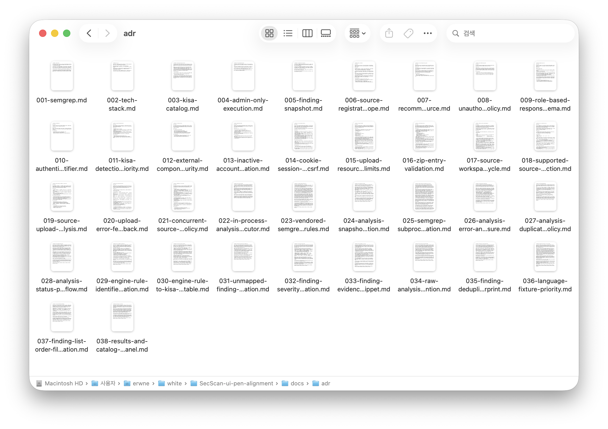
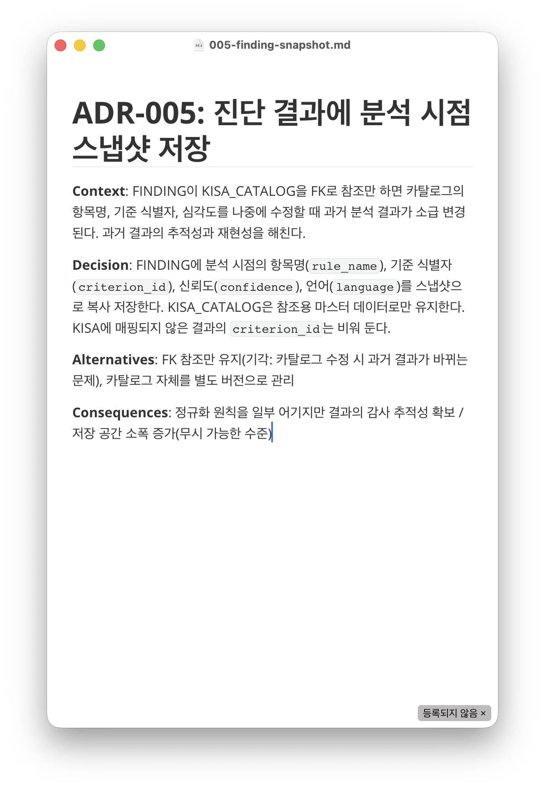
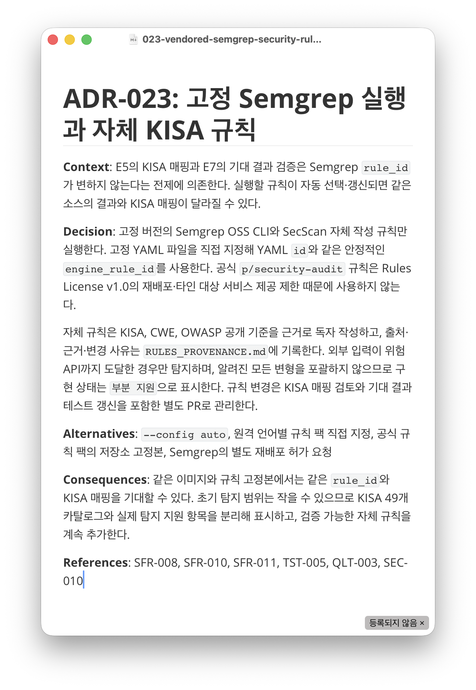
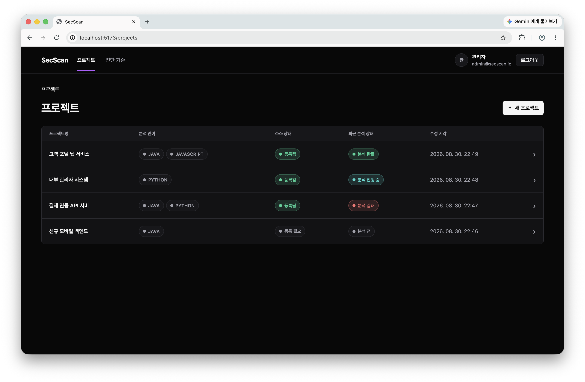
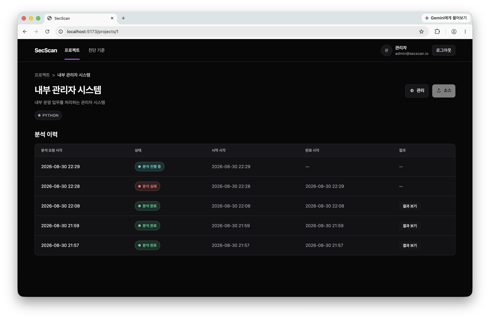
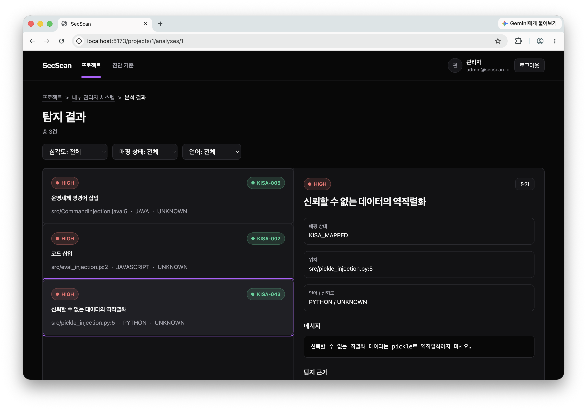
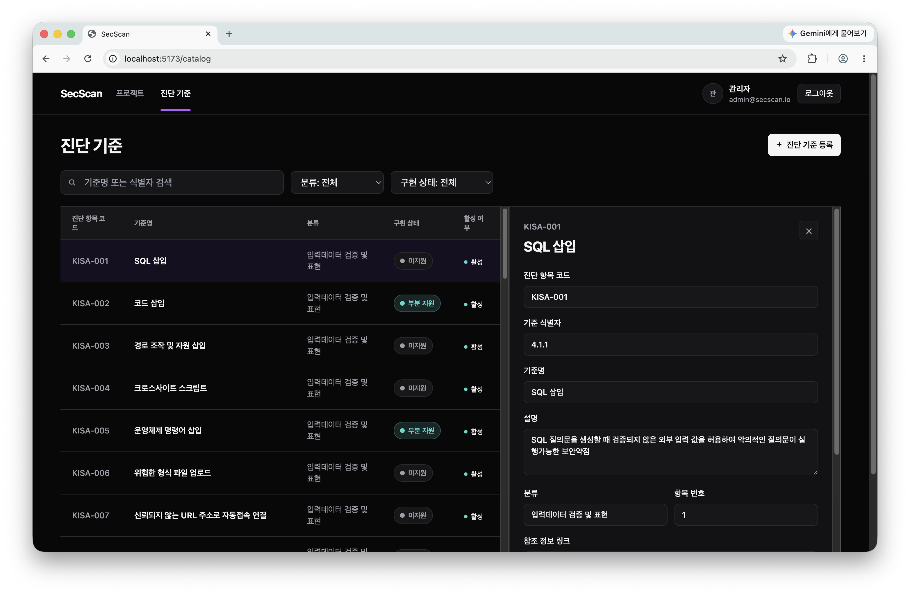

권한과 접근 제어
원문역할별 기능과 데이터 접근
권한을 일관되게 적용
해석서버가 현재 권한을 다시 확인하고
비인가 자원은 404 처리

원문역할별 기능과 데이터 접근
권한을 일관되게 적용
해석서버가 현재 권한을 다시 확인하고
비인가 자원은 404 처리
원문여러 방식의 소스 등록과
분석 처리
해석ZIP 업로드부터 구현하고
경로와 실행 자원 위험 차단
원문KISA 49개 항목을
구현 상태와 함께 관리
해석49개 기준은 모두 관리하고
검증한 탐지만 부분 지원으로 표시
* ADR = 설계 판단과 그 이유를 기록한 문서
아키텍처 결정 기록 (Architecture Decision Record)

카탈로그를 나중에 수정해도
분석 당시의 항목명과 기준, 심각도는 그대로 남김

규칙 라이선스 제약 확인 후
Semgrep OSS 엔진은 유지하고
KISA 기준 기반 규칙만 직접 작성

E1~E6 구현 완료→E7 최종 검증



